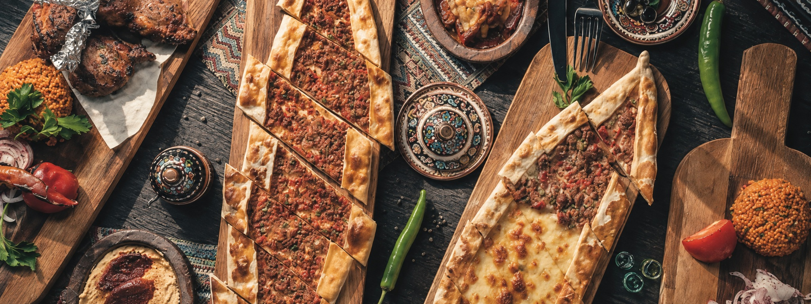
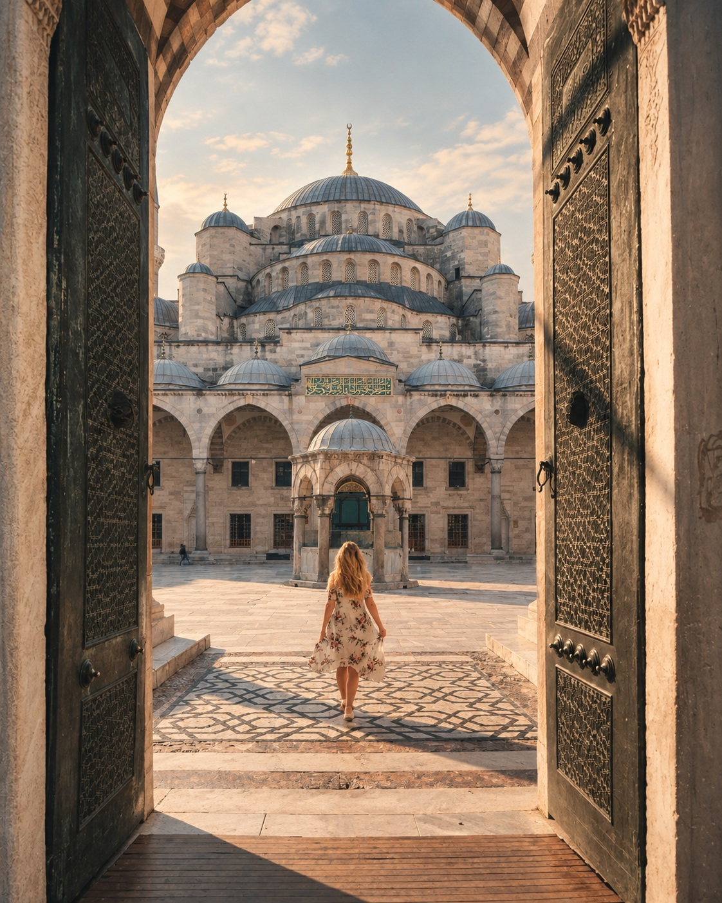
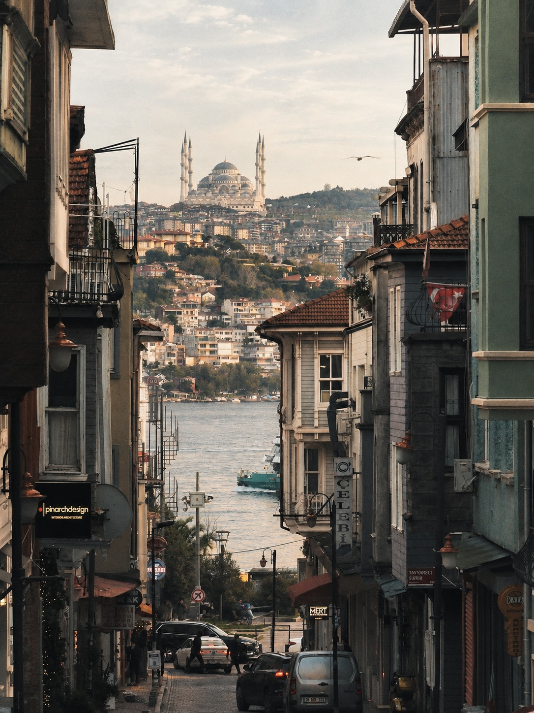
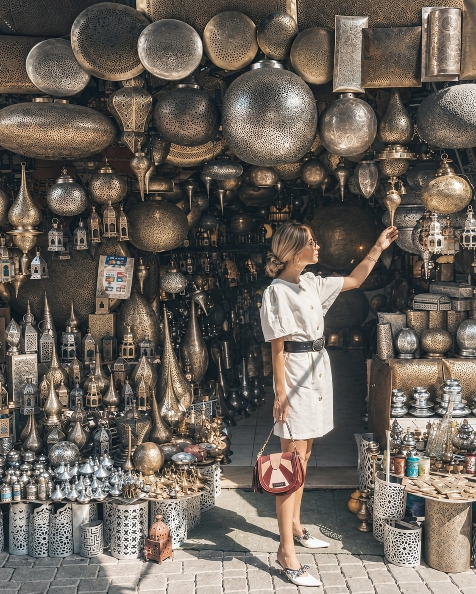

Comida típica
En Estambul vas a encontrar platos típicos que no te puedes perder.
Ver másEstambul es una ciudad única en el mundo: se encuentra entre Europa y Asia, separada por el estrecho del Bósforo.
Durante siglos, diferentes culturas e imperios han dejado su huella en sus calles, edificios y tradiciones. Hoy, esta mezcla convierte a Estambul en un destino donde la historia y la vida moderna conviven en cada rincón.
Descubre másEuropa y Asia
Une dos continentes
Miles de años de cultura
Mezquitas y monumentos


En Estambul vas a encontrar platos típicos que no te puedes perder.
Ver más
Conoce la maravillosa arquitectura de Estambul recorriendo sus calles.
Ver más
No te puedes ir de Estambul sin antes ver esto.
Ver más
Descubre uno de los lugares más emblemáticos de Estambul por su impresionante arquitectura, es un plan que en definitiva no te puedes perder.
Ver más
Disfruta de las increíbles vistas que ofrece el estrecho que conecta Europa y Asia en un solo plano para ti para que te asombres.
Ver más
Recorre uno de los mercados más antiguos de la ciudad y descubre sus colores y tradiciones, aprovecha también y llevas los mejores recuerdos.
Ver más
Conoce este impresionante monumento que refleja la historia y la diversidad cultural de Estambul para que conozcas más de esta maravillosa ciudad.
Ver másEmpieza a planear tu viaje y vive una experiencia inolvidable.
¡Planea tu viaje!